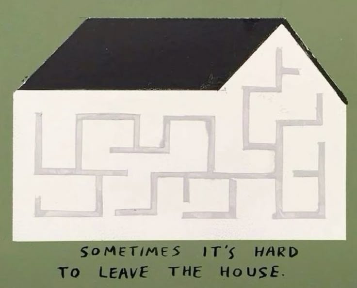

_____________ __.___ _______
/ _____/ |/ _| |\ \
+ ------------------- \_____ \| < | |/ | \ -------------------- +
| / \ | \| / | \ |
| /_______ /____|__ \___\____|__ / |
| \/ \/ \/ |
| |
| |
| |
| "Technology is not neutral. We're inside of what we make, |
| and it's inside of us. We're living in a world of connections - |
| and it matters which ones get made and unmade." -Haraway |
| |
| |
| |
+____________________________________________________________________________ +
Encompassing it all ——————————————————————————————————
"People will come to love their oppression, to adore the technologies that undo their capacities to think"
Neil Postman wrote in his 2011 book ‘Technopoly: The Surrender of Culture to Technology,’ : "We are currently surrounded by throngs of zealous ... one-eyed prophets who see only what new technologies can do and are incapable of imagining what they will undo. We might call such people Technophiles. They gaze on technology as a lover does on his beloved, seeing it as without blemish and entertaining no apprehension for the future." As time has gone on, we see this relationship continue to manifest itself further and further, – not only this mentality, but systems being put in place to continue to foster and protect this relationship we continue to desire to cultivate. In this last section, I aim to explore the various systems in place that have come to be integral to upkeep the technologies of untethered dissatisfaction and shame with which we see today. In Lisa Park’s article "The Politics of Infrastructural Visibility," she states
"We are socialized to know so little about the infrastructures that surround us, even though many of us use mobile phones each day. Would our experience of mobile telephony change if we knew more about the architectures of signal distribution? It is difficult to say, but we certainly would have a different relation to technology if we understood it as something more elaborate and expansive than something that rings in our purse or vibrates in our pocket."
In this fast-paced world of technology, who has time to look under the hood? Who even has access to looking under the hood? And who has the power to change these inner workings that are just out of public sight. As our technologies become sleek, obscured and out of reach. We might see this recurring trend within the clean metal encasements of our personal devices that don’t allow for any tampering, manufacturing practices being removed from the western user’s view, or cable stations being held on islands that are out of sight from the majority of the user's sight. It is because of this that,
"It is important to devise other ways of visualizing and developing literacy about infrastructures and the relations that take shape through and around them. Are there ways of representing cell towers that will encourage citizens to participate in sustained discussions and decisions about network ownership, development, and access? What is it about infrastructure that is aesthetically unappealing? What form should infrastructure sites assume? Should they be visible or invisible?"(Link)
It seems any holdbacks of a technology are masked, and instead we are sold the ideology of limitlessness and pioneering the future in attempts to guarantee continuity, with knowledge that capitalism is built off promises of future return. As we attempt to find solace in techno-solutionism, a futile and cyclical ideal, we attempt to compensate in other forms, such as design and manipulation tactics, etc. It’s not a bad thing to have an innovation that you believe in, and do all you can to ‘sell’ your idea to others. However, a line must be drawn between ideals and grappling with delusion. Take for example lithium, and the contrasting reality of ideals encompassing the technology: Samir Bhowmik –professor of New Media, Infrastructures and Environment at the Aalto School of Arts– states,
"The imaginaries engendered by the lithium industry are presented as synonymous with growth, clean energy, and a movement away from reliance on fossil fuels. But on further analysis, these representations are largely immaterial and dimensionless, making the true scope and scale of lithium-based energy systems impossible to grasp. [...] The visual culture of lithium is clouded in utopian dreams and abstractions of energy sufficiency." This pervasive branding accompanied by feelings of general acceptance that technology has unsavory cost seems to allow unethical practices to continue."
We can also see this shown through Liam Young’s video "We Power Our Future With the Breastmilk of Volcanoes," as he juxtaposes how Elon Musk talks about lithium, versus drone footage of Bolivian Salt Lakes and the Atacama Desert. Due to the flimsy trust that has been built between consumers and manufacturers, it’s more important than ever to call attention towards the systems and processes in place that come before technology’s point-of-sale at the cash register. It is often a use of language and connotation that allows big tech’s true practices to slip through the cracks. This language can remove consumers from the physical and material nature of their technology – another example being the hoax of ‘wireless’ tech: "connectivity is neither as untethered nor ethereal as wifi implies." Instead it is a highly physical process and system that requires massive amounts of labor, materials, and land. "‘When we imagine a network these days,’ Anna Munster observes, ‘it is hard to stave off the flood of visualizations … that populate our contemporary connectionist imaginary.’" Thus, the article suggests "we should wonder more about the "patterns of mind" tied to those representational techniques."
Even "cloud computing is a form of dissociation from the materiality of data, that creates distance from the impact of cloud consumption in deliberate, albeit dangerous, ways," resulting in the refusal of boundaries between human and environment.
Yet another example is Apple being notorious for "always highlight[ing] its design origins in Cupertino (every Apple product comes with a piece of paper that states "designed in Cupertino, California") rather than its actual production culture in China in order to preserve the image of an artisanal product, a strategy which makes it especially and enduringly globally desirable." And through marketing tactics they’ve created a reputation showing that "Sure the iPhone is pricey, but it is "worth it" because it is emphatically not a toy for the idle rich, but rather a tool for industrious "makers" who use it to broadcast updates, photos, and other data." Taking this all into account, wherever a promotional material may lean into, we can see what we want consumers to shift their eyes from. "We are beguiled by misleading marketing narratives to suspend disbelief and impute prodigious human-ish capabilities which are nonexistent. We mistake engineering achievements for independent thought and linguistic agency." We must not buy into the narratives: instead of listening to their words, we must listen to their actions and the systems it affects.
Another system in place I would like to call attention to is the Dispossession Cycle, as explained by Shoshanna Zuboff, illustrating one way in which big tech sustains its guarantee of continuity via legislative manipulation in addition to marketing tactics.
Stage One: Incursion: The first stage of successful dispossession is initiated by unilateral incursion into undefended space: your laptop, your phone, a web page, the street where you live, an e-mail to your friend, your walk in the park, browsing online for a birthday gift, sharing photos of your kids, your interests and tastes, your digestion, your tears, your attention, your feelings, your face.
Stage Two: Habituation: Second stage the aim is habituation: Whereas lawsuits and investigations unwind at the tedious pace of democratic institutions, Google continues the development of its contested practices at high velocity. The incursion itself, once unthinkable, slowly worms its way into the ordinary. It gradually comes to seem inevitable. New dependencies develop. Populations grow numb, it becomes more difficult for individuals and groups to complain.
Stage Three: Adaptation: In a third stage of the cycle, when Google is occasionally forced to alter its practices, its executives and engineers produce superficial but tactically effective adaptations that satisfy the immediate demands of government authorities, court rulings, and public opinion. Cultivate new rhetoric, methods, and design elements that redirect contested supply operations just enough so that they appear to be compliant with social and legal demands.
Stage four: Redirection tactics to make their actions and products more appealing, focusing on really selling aspects of the product that will benefit the population, and redirecting attention away from the negative sides of their operation.
We see again and again, big tech companies such as Google, Amazon, Uber, Apple, Facebook, and others continuously flex that their innovation moves at a speed faster than legislation. It is increasingly clear that "the rules of the innovation game are changing and the question remains whether it is the radical innovation that leads to radical changes or if it is only the first, though necessary, step in the change process." Knowing many practices that technology images in are wrong, we see many big tech companies using in-place systems to justify them, rather than empathy and common sense, we see technology companies scrambling to steel their innovations (and subsequently, their ego) in order to guarantee its survival. By acknowledging the presence of shame within our technologies, we can start to better understand why technologies that set out with good intentions, may turn sour, driving us further and further away from ourselves and initial goals. By having these difficult conversations about the padding of these shame systems, we can start to understand why obvious shame starts to turn into suppression and normalization. With these "mysterious influencing machines." and systems overtaking every aspect of our lives, we should remember the humble idea that awareness is the backbone of user agency and a balanced consumer-company relationship in the neoliberal age.
"But it is much later in the game now, and ignorance of the score is inexcusable. To be unaware that a technology comes equipped with a program for social change, to maintain that technology is neutral, to make the assumption that technology is always a friend to culture is, at this late hour, stupidity plain and simple." ― Neil Postman

